Объемный расход - 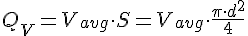
Массовый расход - 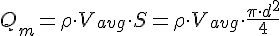
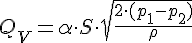
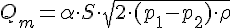
Критерий или коэффициент Ренольдса - характеризует тип потока
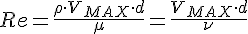 (2300)
где - динамическая вязкость;
- кинематическая вязкость.
В случае трубки Пито:
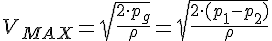
Акустические преобразователи расхода
Принцип работы акустического расходомера основан на генерации акустической волны, проходящей через поток вещества, протекающего в трубе постоянного сечения и регистрации изменений параметров акустических волн(фазы, частоты, и т.д.), вызываемых течением жидкости.
Классическая модель
рисунок 1
Время запаздывания: 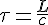 [с], где - скорость звука в среде
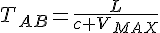
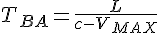
Общая формула преобразования:
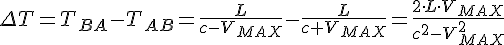, т.к. то 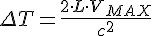
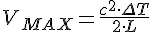
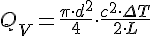
Время-импульсный расходомер
рисунок 2
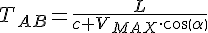
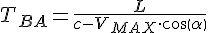
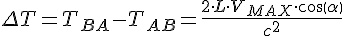
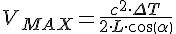
Частотно-импульсный расходомер
Рисунок как и у время-импульсного
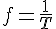
Фазо-импульсный расходомер
Рисунок как и у время-импульсного
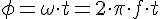
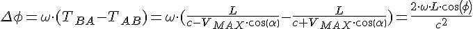
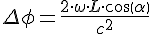